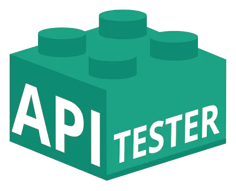

Interfaz gráfica e interactiva para APIs de Back-End
Todos sabemos que cuando desarrollamos debemos ir probrando nuestro código, para esto usamos diversas herramientas, pero casi ninguna lo hace gráficamente.
Esta aplicación lo soluciona de una forma bastante interesante, podrás ver el resultado del llamado a una API en una lista, donde podrás interactuar con las peticiones clásicas de CRUD.